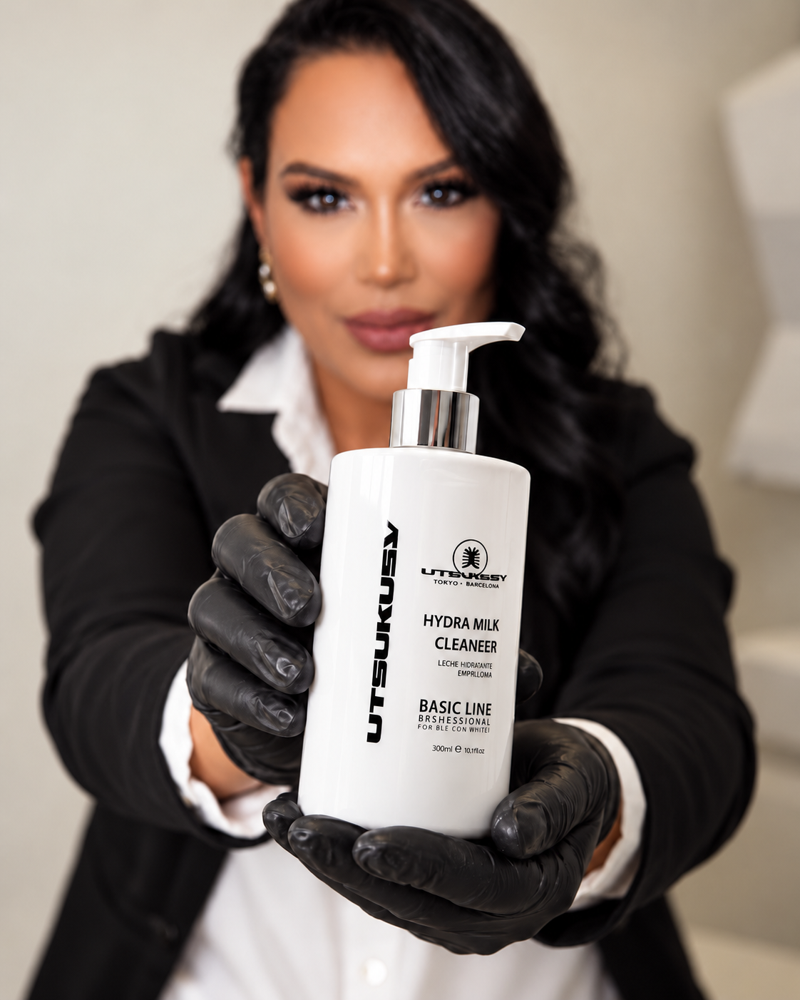

Architecture du regard, tracé personnalisé et techniques poil à poil adaptées à votre morphologie.
Découvrir ↗
International PMU · Le Cannet
La couleur
juste.
Maquillage permanent pensé pour toutes les carnations, avec une expertise particulière des peaux mélaninées.
01 / LES SOINS
Des soins pensés pour
révéler votre beauté.
De la ligne du sourcil à l’éclat de la peau, chaque protocole est personnalisé pour respecter votre identité et votre carnation.
Correction de la tonalité, neutralisation des lèvres foncées et couleur sur mesure au fini naturel.
Découvrir ↗Protocoles ciblés pour purifier, lisser, hydrater et raviver l’éclat de chaque carnation.
Découvrir ↗Courbure, teinture et soin pour ouvrir le regard avec élégance, sans l’alourdir.
Découvrir ↗02 / POSITIONNEMENT & MARQUE
INTERNATIONAL LUXURY PMU
Une expertise qui voyage.
Une signature qui reste.
Pamela conjugue lecture de la carnation, maîtrise du pigment et précision du geste. Une approche profondément personnelle, enrichie par des formations internationales et pensée pour toutes les beautés.

Formation internationale
Artiste formée à l’international et aux protocoles PhiAcademy, avec plus de 35 certificats et diplômes obtenus autour du monde.
Spécialiste des peaux mélaninées
Expertise des peaux africaines, brunes et métissées, avec une spécialité en éclaircissement et neutralisation des lèvres foncées.
Beauté guidée par la science
Une approche à la croisée de la santé, de la cosmétologie et de l’esthétique.
PhiAcademy & Utsukusy
Pamela représente l’exigence PhiAcademy et travaille avec les produits professionnels Utsukusy, sélectionnés pour la qualité et la sécurité des protocoles.
* Les villes et pays de formation seront validés avec Pamela avant la version définitive.
07 / INSTAGRAM
Suivez son travail.
Découvrez sa signature.
Conseils, coulisses et transformations : retrouvez l’univers de Pamela au quotidien.
@pamela.martins.pmu↗


03 / PARCOURS & CERTIFICATIONS
PAMELA MARTINS · INTERNATIONAL PMU
Une expertise construite
formation après formation.
Des techniques internationales, une pratique exigeante et une spécialisation dédiée à la beauté de chaque carnation.
35+certificats et diplômes obtenus autour du monde



SÉLECTION DE CERTIFICATS
Un parcours visible, des compétences vérifiables.


05 / AVANT & APRÈS
Des résultats visibles.
Toujours naturels.
Des transformations réelles, photographiées dans des conditions comparables pour montrer la précision du travail de Pamela.
Sourcils sur mesure


Neutralisation labiale


Pigmentation des lèvres


Lip Blush naturel


Design des sourcils


Restructuration des sourcils


Le bon pigment ne se devine pas.
Il s’observe.
Survolez une nuance ou touchez-la pour voir sa couleur.Nuances de référence. Le pigment final est choisi après l’analyse professionnelle de la peau, du sous-ton et du résultat souhaité.
06 / TARIFS
Des prix clairs avant de réserver
Maquillage permanent lèvres et sourcils sur devis personnalisé.
Tarifs issus du flyer actuel. La version finale sera publiée après confirmation de Pamela.
06 / BEAUTÉ PLURIELLE
Chaque peau mérite une lecture précise.
Pamela accueille toutes les peaux, toutes les carnations, toutes les origines et toutes les ethnies — françaises, brésiliennes, capverdiennes, portugaises et bien d’autres.

08 / QUESTIONS
Avant de vous décider
La neutralisation labiale me convient-elle ?+
Envoyez une photo en lumière naturelle pour recevoir une première orientation personnalisée.
Comment obtenir un devis ?+
Répondez à quelques questions. Pamela vérifie ensuite votre demande et finalise le devis.
Où réserver ?+
Réservez directement sur Planity ou contactez Pamela par WhatsApp.
Comment se déroule l’accompagnement ?+
01Vous expliquez votre besoin
02Pamela étudie la demande
03Vous recevez son conseil
04Le suivi continue
Votre projet commence par une conversation.